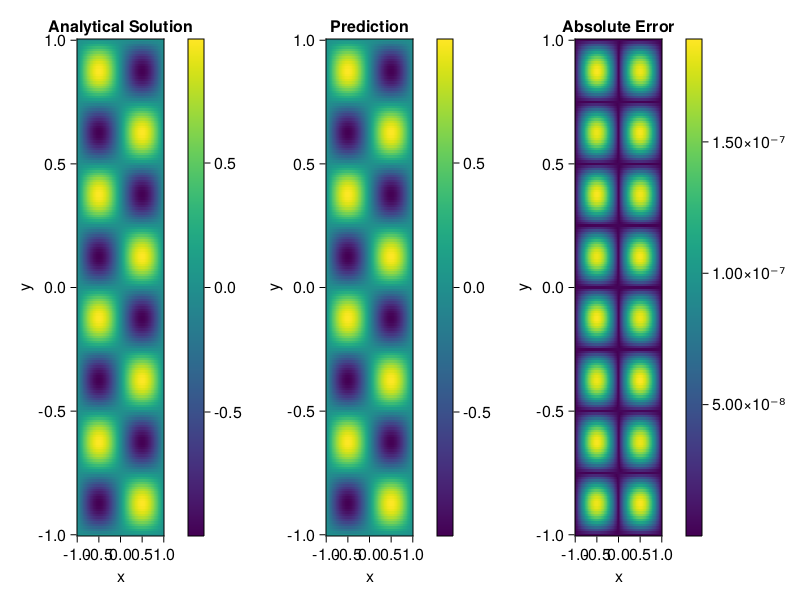

Helmholtz equation
Let us consider the Helmholtz equation in two space dimensions
\[\begin{aligned} &\Delta u(x, y)+k^{2} u(x, y)=q(x, y), \quad(x, y) \in \Omega:=(-1,1)^2 \\ &u(x, y)=0, \quad(x, y) \in \partial \Omega \end{aligned}\]
where
\[q(x, y)=-\left(a_{1} \pi\right)^{2} \sin \left(a_{1} \pi x\right) \sin \left(a_{2} \pi y\right)-\left(a_{2} \pi\right)^{2} \sin \left(a_{1} \pi x\right) \sin \left(a_{2} \pi y\right)+k^{2} \sin \left(a_{1} \pi x\right) \sin \left(a_{2} \pi y\right).\]
The excat solution is $u(x,y)=\sin{a_1\pi x}\sin{a_2\pi y}$. We chose $k=1, a_1 = 1$ and $a_2 = 4$.
using ModelingToolkit, IntervalSets, Sophon, Lux
using Optimization, OptimizationOptimJL
@parameters x,y
@variables u(..)
Dxx = Differential(x)^2
Dyy = Differential(y)^2
a1 = 1
a2 = 4
k = 1
q(x,y) = -(a1*π)^2 * sin(a1*π*x) * sin(a2*π*y) - (a2*π)^2 * sin(a1*π*x) * sin(a2*π*y) + k^2 * sin(a1*π*x) * sin(a2*π*y)
eq = Dxx(u(x,y)) + Dyy(u(x,y)) + k^2 * u(x,y) ~ q(x,y)
domains = [x ∈ Interval(-1,1), y ∈ Interval(-1,1)]
bcs = [u(-1,y) ~ 0, u(1,y) ~ 0, u(x, -1) ~ 0, u(x, 1) ~ 0]
@named helmholtz = PDESystem(eq, bcs, domains, [x,y], [u(x,y)])\[ \begin{align} \frac{\mathrm{d}^{2}}{\mathrm{d}x^{2}} u\left( x, y \right) + \frac{\mathrm{d}^{2}}{\mathrm{d}y^{2}} u\left( x, y \right) + u\left( x, y \right) =& - 166.7832748185191 \sin\left( 3.141592653589793 x \right) \sin\left( 12.566370614359172 y \right) \end{align} \]
Note that the boundary conditions are compatible with periocity, which allows us to apply BACON.
chain = BACON(2, 1, 5, 2; hidden_dims = 32, num_layers=5)
pinn = PINN(chain) # call `gpu` on it if you want to use gpu
sampler = QuasiRandomSampler(300, 100)
strategy = NonAdaptiveTraining()
prob = Sophon.discretize(helmholtz, pinn, sampler, strategy)
@time res = Optimization.solve(prob, BFGS(); maxiters=1000)u: ComponentVector{Float64}(filters = (filter_1 = (bias = [0.8263133419629772; -0.7673339970393338; … ; -0.3799148879563869; -0.5160911802397733;;]), filter_2 = (bias = [0.09859909992069751; -0.8075704380379192; … ; -0.17716191031544132; -0.3478566834418972;;]), filter_3 = (bias = [0.18893570844868232; 0.9410903353557024; … ; 0.33906248832068575; 0.1771937303052995;;]), filter_4 = (bias = [-0.5315186672096233; 0.16781116741518826; … ; 0.8844619153366665; 0.33167773394440203;;]), filter_5 = (bias = [-0.428541612197326; -0.604348981240653; … ; -0.04065604034295784; 0.6873274945762952;;])), linear_layers = (layer_1 = (weight = [-0.2481012988346183 -0.274994128166842 … -0.17518787409188996 0.34240328198281156; -0.22106073158963435 -0.3312193573089564 … 0.15019085633201135 0.17592465563148674; … ; 0.19525299770561055 0.007740292225911427 … -0.18077209876250452 0.3653745086705501; 0.4490996585641099 0.29434526103103614 … 0.014154785514612125 0.061237381841042035], bias = [-0.03476661667528918; 0.010574863993926481; … ; -0.021459265536360995; 0.0008332738676982901;;]), layer_2 = (weight = [0.012781852495920103 0.16794279211980032 … 0.06539317088932173 0.21455135155557725; 0.17746870951824442 -0.3961061631070271 … 0.27422378883644233 -0.29702114732507595; … ; 0.44110732502797334 -0.11988653139420719 … -0.39464636768370226 -0.20697598867173828; -0.2207274026612933 -0.400949667011858 … -0.3370332193136394 0.17792336831472227], bias = [0.008462175289550221; -0.008522043878394997; … ; -0.011050705635529276; 0.006463826180201183;;]), layer_3 = (weight = [-0.4081764680609516 0.14191270906128894 … 0.07716667203188049 -0.06606108037633951; -0.41273708365850853 0.19665241193444646 … -0.32999362752235734 -0.24572658140026873; … ; -0.27534718482004317 -0.36287994582538896 … 0.36234564852124884 -0.2398926334146589; -0.4171394470877679 -0.19316046613250934 … 0.05032800115349765 0.3810967258349343], bias = [-0.003104528478963379; 4.286356349679907e-5; … ; -0.0029585512513408273; -0.0026851411119027707;;]), layer_4 = (weight = [0.23138931685960032 0.01723938009410669 … 0.27753939274227035 -0.036765942261377395; 0.5088724149892868 0.32140833721147827 … -0.29467181306780893 0.01734534379923741; … ; 0.5015895291434371 -0.14099487270605632 … -0.24723739320724103 0.2903024870523161; -0.39612116434167693 -0.023471078427214423 … 0.125504490863245 0.05455397006094284], bias = [-0.018308670651337018; 0.047413091716360045; … ; -0.003429134623117762; -0.00016335829237709113;;])), output_layer = (weight = [-0.11441173654869108 0.5766126302610611 … 0.19492653439017488 0.43595117180491666], bias = [0.019677356716611968;;]))Let's plot the result.
phi = pinn.phi
xs, ys= [infimum(d.domain):0.01:supremum(d.domain) for d in domains]
u_analytic(x,y) = sinpi(a1*x)*sinpi(a2*y)
u_real = [u_analytic(x,y) for x in xs, y in ys]
phi_cpu = cpu(phi) # in case you are using GPU
ps_cpu = cpu(res.u)
u_pred = [sum(phi_cpu(([x,y]), ps_cpu)) for x in xs, y in ys]
using CairoMakie
axis = (xlabel="x", ylabel="y", title="Analytical Solution")
fig, ax1, hm1 = heatmap(xs, ys, u_real, axis=axis)
Colorbar(fig[:, end+1], hm1)
ax2, hm2= heatmap(fig[1, end+1], xs, ys, u_pred, axis= merge(axis, (;title = "Prediction")))
Colorbar(fig[:, end+1], hm2)
ax3, hm3 = heatmap(fig[1, end+1], xs, ys, abs.(u_pred-u_real), axis= merge(axis, (;title = "Absolute Error")))
Colorbar(fig[:, end+1], hm3)
fig